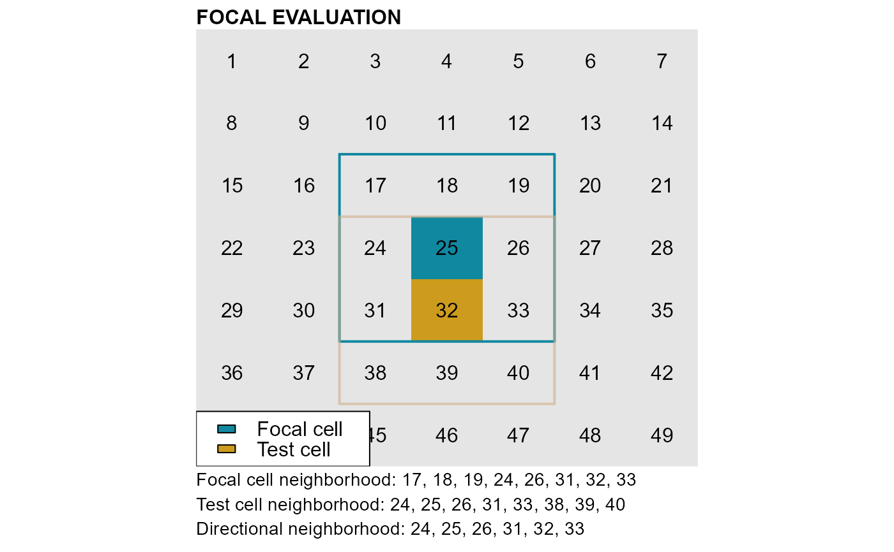

Check for spelling and syntax errors in conditions (cond argument) and
detect the type of conditions being used.
conditions(names_attTbl, cond, silent = FALSE)character vector, the column (i.e. variable) names of the
attribute table returned by the function attTbl.
character string, condition string used to classify raster cells
(see cond.4.nofn, cond.reclass,
cond.4.all and anchor.seed).
logic, when true, the function returns only error messages.
An error message if the function finds spelling or syntax errors or a
a string with the types of rules that were detected in the argument
cond.
Conditions (or classification rules)
Classification rules evaluate either to true or false and determine what raster cells belong to a class.
Conditions are passed to scapesClassification functions as a
single character string. They can consist of combination of arithmetic
(+|-|*|/|^|%%|%/%), relational (>|<|>=|<=|==|!=|%/%) and
logic operators (&||), base R functions (e.g.,
abs(variable_name)), variables names (as named in the attribute
table, see attTbl) and previous classifications (either
stored as classVector or as rasters).
A combination of absolute and relative conditions can be used, but only one neighborhood condition per string is allowed.
Class vectors
Class vectors serve both as function input and output.
They store function classifications by mapping raster cells to numeric classes (or to NA-values if no class is attributed).
The n^th^ element of a class vector corresponds to the raster cell stored
in the n^th^ row of an attribute table (see attTbl).
As inputs, they provide information about what cells have been classified and, consequently, of the spatial relationships existing among different groups of cells.
Every time a class vector is provided as a function input, it is updated by assigning a numeric class to unclassified cells that meet function conditions.
Unclassified cells are represented as NA values in the class vector.
Rule evaluation
One of the arguments of the classification functions is the
classVector, a numeric vector that identifies what raster cells have
already been classified (non-NA values) and what have yet to be classified
(NA values). Cells that have already been classified are excluded from the
rule evaluation unless the argument 'overwrite_class = TRUE'.
Global evaluation
Classification rules are applied to all raster
cells (excluding the classified ones). This type of evaluation is common to
classification functions that do not have the argument nbs_of. Only
absolute conditions can have a global evaluation. See function
cond.4.all.
Focal evaluation
Classification rules are applied only to raster
cells contiguous to focal cells. This type of evaluation is common to
classification functions that have the argument nbs_of. The argument
nbs_of identifies the class(es) of the focal cells. See functions
anchor.seed, cond.4.nofn and
cond.reclass.
Focal evaluation can take into account both absolute and relative rules;
Some classification functions do not have a condition argument.
Classifications performed by these functions are based on focal evaluations
and only take into account the spatial relationships existing among
different groups of cells. See functions reclass.nbs and
classify.all.
Focal evaluation, definitions
Cell neighborhood: a cell with coordinates (x, y) has 8
neighbors with coordinates: (x±1, y), (x, y±1) and
(x±1, y±1). Cells on the edge of a raster have less than 8
neighbors. See ngbList.
Focal cell: cell identified by one of the classes of the argument
nbs_of.
Test cell: the cell in the neighborhood of the focal cell that is being tested. At turns all cells in the neighborhood of a focal cell are tested against the classification rule.
Directional neighborhood: it consists of the intersection between the focal and the test cell neighborhoods.
Absolute conditions
1) Absolute test cell condition: compares cell values against a threshold value.
This type of condition applies to all functions with a conditions
argument.
In global evaluations all cells meeting absolute conditions receive a
classification number. In focal evaluations all test cells meeting
absolute conditions receive a classification number.
Examples of valid conditions: "variable_A > 1 & variable_B !=
0"; "(variable_A^2 < 50 & variable_B == 0) | abs(variable_C) > 50".
Functions: anchor.seed, cond.4.all,
cond.4.nofn and cond.reclass.
2) Absolute neighborhood condition: compares the values of the
test cell and of its neighborhood against a threshold value.
This type of condition applies to the functions cond.4.nofn and
cond.reclass.
An absolute neighborhood condition is identified by a variable name
followed by curly brackets (e.g., "variable_name{}").
A maximum of 9 evaluations are performed for each test cell (the test cell itself and the cells of its neighborhood are compared against a threshold value).
Test cells receive a classification number if the rule is true for at
least as many evaluations as the ones specified by the argument
fn_perc. The argument fn_perc ranges from 0 to 1. When 9
evaluations are performed, fn_perc = 1 means that all 9
evaluations have to be true; fn_perc = 0.5 means that at least
4.5 (rounded to 5) evaluations have to be true.
Only one neighborhood rule is allowed for each condition string (e.g., it
is not possible to have a condition string like "variable_A{} > 0 &
variable_B{} > 1").
The function cond.4.nofn can consider a directional
neighborhood instead of the test cell neighborhood by setting the argument
directional = TRUE.
Example of valid conditions: "variable_A{} > 1 & abs(variable_B)
!= 0".
Functions: cond.4.nofn and
cond.reclass.
Relative conditions
1) Relative focal cell condition: compares the test cell value
against the focal cell value.
This type of condition applies only to functions performing focal
evaluation (i.e. function with a nbs_of argument).
It is identified by a variable name followed by square brackets (e.g.,
"variable_name[]").
Rules are defined repeating twice the same variable name, once with
square brackets and once without. Square brackets indicate the focal cell
value. As an example, the rule "dummy_var < dummy_var[]" compares
the value of the the test cell ("dummy_var") against the value of
the focal cell ("dummy_var[]").
Test cells are classified if the rule is true.
Examples of valid conditions: "variable_A > variable_A[]";
"(variable_A > variable_A[] & variable_B{} < 10) | variable_C > 1".
Note that the last example is a combination of absolute and focal cell
conditions.
Functions: anchor.seed and
cond.4.nofn.
2) Relative neighborhood rule: compares the values of the test
cell against the values of the test cell neighborhood.
This type of condition applies only to the functions
cond.4.nofn and cond.reclass.
It is identified by a variable name followed by curly brackets (e.g.,
"variable_name{}").
Rules are defined repeating twice the same variable name, once with curly
brackets and once without. Curly brackets indicate the test cell
neighborhood. As an example, the rule 'dummy_var < dummy_var{}'
compares the value of the the test cell (dummy_var) against the
values of cells included in the test cell neighborhood
(dummy_var{}).
A maximum of 8 evaluations are performed for each test cell (the test cell is compared against each cell included in its neighborhood).
Test cells receive a classification number if the rule is true for at
least as many evaluations as the ones specified by the argument
fn_perc. The argument fn_perc ranges from 0 to 1. When 8
evaluations are performed, fn_perc = 1 means that all 8
evaluations have to be true; fn_perc = 0.5 means that at least
5 evaluations have to be true.
Only one neighborhood rule is allowed for each condition string (e.g., it
is not possible to have a condition string like "variable_A{} > 0 &
variable_B{} > variable_B").
The function cond.4.nofn can consider a directional
neighborhood instead of the test cell neighborhood by setting the argument
directional = TRUE.
Example of valid conditions: "variable_A > variable_A{}";
"(variable_A > variable_A{} & variable_B != variable_B[]) |
variable_C > 1". Note that the last example is a combination of absolute
and relative conditions.
Functions: cond.4.nofn and
cond.reclass.
# LOAD LIBRARIES
library(scapesClassification)
library(raster)
# TYPES OF CONDITIONS
# As an example consider an attribute with the following columns
names_attTbl <- c("bathymetry", "slope")
# And the following conditions
cond <- "bathymetry>10"
conditions(names_attTbl, cond)
#> [1] "'Absolute test cell' condition type(s) detected."
cond <- "classVector != 1"
conditions(names_attTbl, cond)
#> [1] "'Class vector' condition type(s) detected."
cond <- "bathymetry[]>bathymetry | abs(slope{}) < 5"
conditions(names_attTbl, cond)
#> [1] "'Relative focal cell' AND 'Absolute neighborhood' condition type(s) detected."
cond <- "bathymetry[]>bathymetry | abs(slope{}) < slope"
conditions(names_attTbl, cond)
#> [1] "'Relative focal cell' AND 'Relative neighborhood' condition type(s) detected."
if (FALSE) {
# The function conditions detect syntax and spelling errors
cond <- "bathymetry[]>10 & | abs(slope{}) < 5"
conditions(names_attTbl, cond)
cond <- "baxxxthymetryxxx[]>10 & abs(slope{}) < 5"
conditions(names_attTbl, cond)
}
# PREPARE PLOT
library(scapesClassification)
library(raster)
library(ggplot2)
library(reshape2)
library(ggpubr)
#>
#> Attaching package: 'ggpubr'
#> The following object is masked from 'package:raster':
#>
#> rotate
m <- matrix(1:49, nrow = 7, ncol = 7, byrow = TRUE)
r <- raster(m)
nbs <- ngbList(r)
m <- t(m)[,nrow(m):1]
m_long <- melt(m)
m_long$tags[m_long$value == 32] <- "FC"
m_long$tags[m_long$value == 25] <- "TC"
npool <- unique(unlist(nbs[c("32", "25")]))
m_long$whites[m_long$value %in% npool] <- m_long$value[m_long$value %in% npool]
m_long$tags <- as.factor(m_long$tags)
p1 <- ggplot(m_long, aes(x=Var1, y=Var2)) +
geom_tile(aes(fill=tags), colour="gray90", lwd=1.5, show.legend = FALSE) +
coord_fixed(ratio=1) +
geom_text(aes(label=value), color = "grey50", family=c("serif"), size=8, na.rm=TRUE) +
geom_text(aes(label=whites), color = "white", family=c("serif"), size=8, na.rm=TRUE) +
scale_fill_manual(values = c("#1088a0", "goldenrod3"), na.value = "black") +
geom_rect(aes(xmin = 2.5, xmax = 5.5, ymin = 1.5, ymax = 4.5),
fill = "transparent", color="#1088a0", lwd = 1.5) +
geom_rect(aes(xmin = 2.5, xmax = 5.5, ymin = 2.5, ymax = 5.5),
fill = "transparent", color="goldenrod3", lwd = 1.5) +
geom_rect(aes(xmin = 2.6, xmax = 5.4, ymin = 2.6, ymax = 4.4),
fill = "transparent", color="red", lwd = 1.2) +
theme_void() +
scale_x_discrete(expand=c(0,0)) + scale_y_discrete(expand=c(0,0)) +
labs(title = "Cell numbers") +
theme(plot.title=element_text(size = 16, face = "bold", color = "black", family = "serif"))
# FOCAL EVALUATION DEFINITIONS
p1

# FOCAL CELL
# Cell 32
# TEST CELL
# Cell 25
# FOCAL CELL NEIGHBORHOOD
# Cells 24, 25, 26, 31, 33, 38, 39, 40
# TEST CELL NEIGHBORHOOD
# Cells 17, 18, 19, 24, 26, 31, 32, 33
# DIRECTIONAL NEIGHBORHOOD
# Cells 24, 25, 26, 31, 32, 33